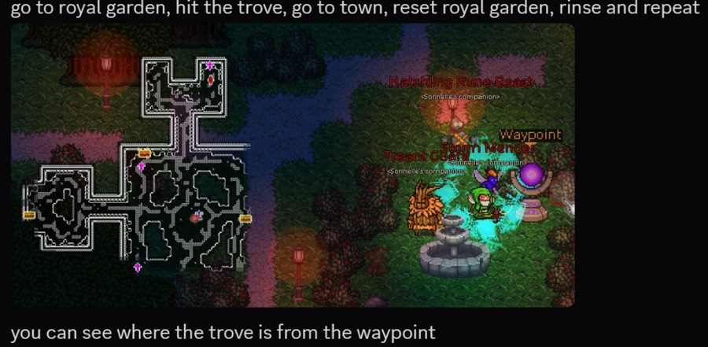
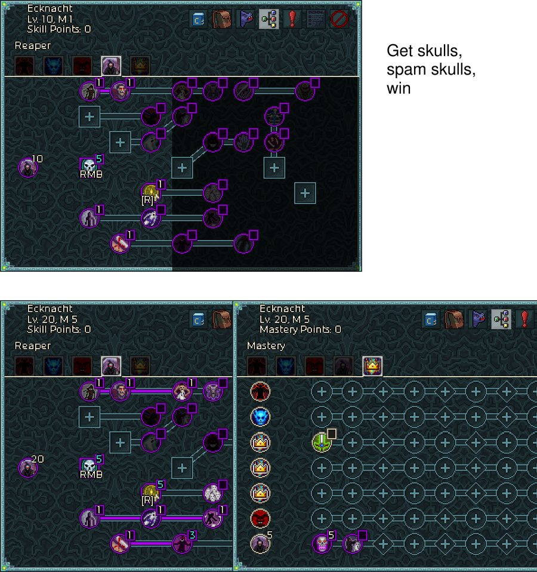
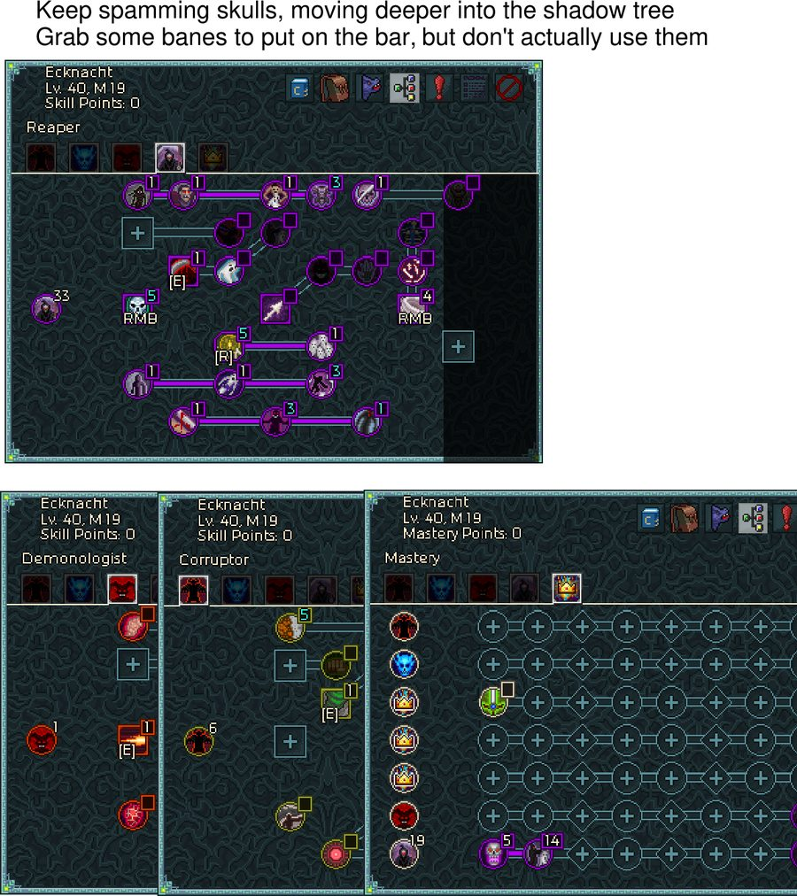
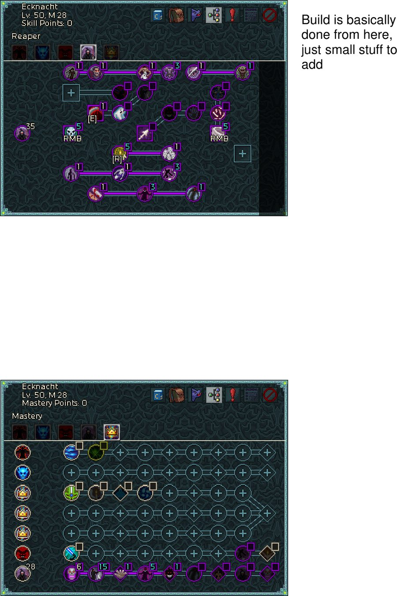
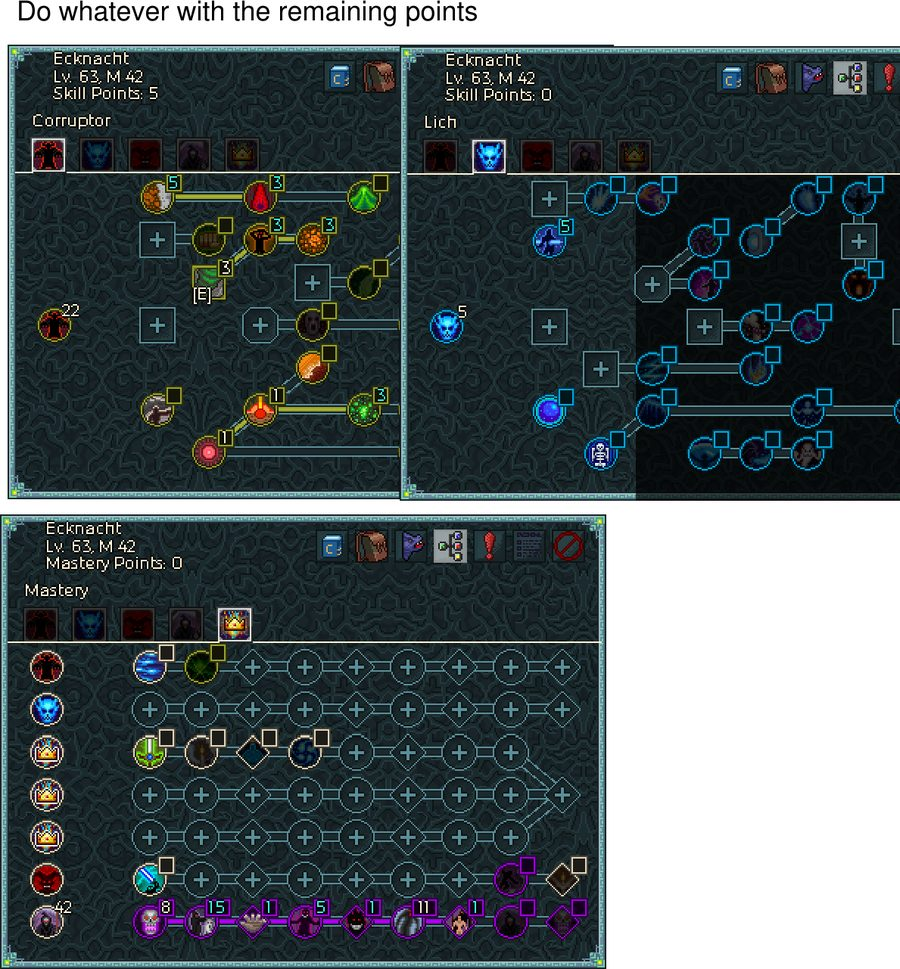

워록으로 캠페인을 밀어 100레벨까지 가는 전 과정 — 스탯 우선순위, 저레벨 도박 요령, 장비, 트리 배분.
검색 결과가 없습니다.
원저자 Rahlence · 원문 lock_leveling_v3.pdf (2026-06-26, 공식 디스코드 #build-forum «Warlock Leveling and Progression») · 게임 버전 1.54.1 (인게임 표기 v1.541)
가이드 캐릭터는 워록 Ecknacht이고, 염료 파밍 스크린샷만 별개 캐릭터(버서커 Rolgor)입니다. 스크린샷 헤더의 Lv. / M 표기가 이 문서 곳곳의 근거로 쓰입니다.
레벨링 구간에서 인챈트·보석·도박 목표를 정할 때의 순서입니다. 위쪽일수록 체감이 큽니다. 커뮤니티
| 순위 | 스탯 | 이유 |
|---|---|---|
| 1 | 적중 시 피해 발동 옵션 on-hit damage procs | 징벌·연소 등. 빌드가 아직 빈약한 초반에 매우 강력하고 레벨링 속도를 크게 올립니다. 특히 징벌(Smite)은 루솜브라의 장화(Lusombra's boots, 템플러 전설)를 확보하고 전설 도박 + 인챈트·보석 커스터마이즈를 돌릴 재료가 있다면 레벨링 내내 강력합니다 |
| 2 | 이동 속도 | 캠페인 진행 속도를 훨씬 빠르게 만듭니다. 원문 표현으로 "아무리 강조해도 지나치지 않다". 주로 방어구 보석과 처치 시 신속 발동에서 확보 |
| 3 | 저항, 특히 전 저항 | 고민할 것도 없는 항목. 높은 난이도에서 편하게 살아남으려면 필수입니다 |
| 4 | 쿨감 + 효과 지속시간 | 추천 빌드들은 자주 쓰는 스킬·버프에 의존하므로, 둘을 같이 챙겨 가동률 100%를 만듭니다 |
| 5 | 고정 피해 (flat damage) | 50레벨 이상 장비에서 특히 쓸 만합니다. 상급 강화가 있으면 훨씬 좋지만 첫 캐릭터엔 없는 선택지 — 나중에 키우는 부캐에서 빛납니다 |
| 6 | 치명타 확률 · 치명타 피해 | 스케일링은 좋지만 필수는 아닙니다. 치확 100% 근처까지 채울 수 있을 때만 의미가 커지고, 재료가 빠듯하면 잡기 어렵습니다 |
| 7 | 공격 속도 | 공격 쿨다운을 다 소화하려면 초당 2회 이상 때려야 하는 시점부터 중요해집니다. 일부 빌드(예: 템플러 격발)에서는 가치가 훨씬 높습니다 |
| 8 | 경험치 보너스 | 속도엔 좋지만 필수는 아닙니다 — 스킨 목적으로 캠페인만 밀어도 3막~4막 사이에 100을 찍습니다 |
| 항목 | 값 |
|---|---|
| 세이브 위치 | %localappdata%/chronicon/save |
| 필수 절차 | 복사 후 게임을 재시작해야 목록에 뜹니다 |
| 이름 규칙 | Tenlock · Twentylock처럼 레벨이 드러나게 |
| 복사 레벨 | 10 · 30 + 클래스별 추천템 해금 레벨 |
| 클래스 세트 도박 비용 (30레벨) | 3,775 크리스탈 / 회 |
| 클래스 세트 도박 비용 (100레벨) | 24,884 크리스탈 / 회 |
| 차이 | 약 6.6배 — 복사본 트릭 하나로 이 비용을 걷어냅니다 |
| 그 외 아이템 | Rahlence의 Chronicon FAQ «Gambling Legendaries» 절에 적힌 레벨 요구치에 맞는 캐릭터를 씁니다 |
캐주얼 난이도에서 첫 보스를 반복해서 잡고, 나오는 염료를 팔면 수백만 크리스탈이 쉽게 모입니다.
| 항목 | 내용 | 근거 |
|---|---|---|
| 총 수량 | 32종 = 클래스당 8종 | 데이터 |
| 기본 염료 | 클래스당 4종 — 처음부터 갖고 있고 드랍되지 않습니다 | 데이터 |
| 보스 드랍 염료 | 클래스당 4종 — 보스에게서 무작위로 나옵니다. 계정 단위 해금 | 데이터 |
| 해금하면 | 그 염료는 더 이상 드랍되지 않습니다 | 커뮤니티 |
앞 세 줄은 changelog/1.200.txt 원문 — "Added 32 dyes: 8 per class - 4 base dyes that are always available, and 4 dyes that drop from bosses randomly (account-wide unlock)". 마지막 줄은 공식 디스코드에서 확인된 내용입니다.
「보스마다 주는 염료가 정해져 있다」는 추측이 커뮤니티에 돌지만, 직접 돌려보니 아니었습니다. 실측
| 관측 | 결론 |
|---|---|
| 같은 보스가 파랑 → 보라 두 가지를 줌 | 보스별 고정 풀 아님 |
| 같은 보스가 두 번 드랍 | 보스별 「이미 줬음」 플래그 없음 |
| 세이브 파일 전수 조사 | 보스별 염료 기록이 어디에도 없음 데이터 |
즉 아무 보스나 반복해서 잡으면 되고, 내 클래스의 아직 잠긴 염료 중 무작위로 나옵니다. 1막 보스 4종을 순서대로 도는 식이면 충분합니다.
실측 2026-08-31 · Chronicon 1.54.1 · 워록 · 1막 보스 순회 · 표본 2회. 세이브(global.dat) 해금 플래그를 함께 대조했습니다
The Chronicon / ISOHC Casual - v1.541이 스크린샷은 10레벨 캐릭터가 이미 M 1이라는 점에서도 근거로 쓰입니다 — 아래 마스터리 경고 참조.
3막에 진입하면 도박 대신 무료로 장비를 파밍할 수 있습니다. 원문 평가는 "지루하지만 확실하다".

앞의 두 개는 유니크 무기, 나머지 여섯 개는 10레벨 복사본에서 도박해 창고로 돌려 쓰는 전설 세트입니다. 수치는 원문 툴팁 그대로입니다. 데이터
| 부위 | 아이템 | 등급 | 핵심 옵션 | 기본 스탯 · 가치 |
|---|---|---|---|---|
| 지팡이 | 악의 뿌리 Root of Evil | 유니크 | 독 +9% · 암흑 +20% · 치확 +12% · 적중 시 암흑 105% 즉발 + 5초간 초당 · 획득 반경 +35% | 체력 +15 · 마나 +15 · 피해 76 · 공속 85% · 치확 11% 가치 1,784 |
| 마법서 | 유혈의 서 Book of Gore | 유니크 | 처치 시 15% 확률 시체 폭발 — 대상 최대 체력의 최대 30%를 에테르 피해로 주변에 · 치확 +12% · 적중 시 암흑 105% 도트 · 효과 지속 +12% | 체력 +15 · 마나 +28 · 피해 +23 가치 2,296 |
| 장화 | 헤르메스의 장화 Boots of Hermes | 전설 | 밀쳐내기 · 이동 방해 완전 면역 + 끌어당김 면역 · 이동 속도 +15% · 전 저항 +15% · 물약 효과 +13% · 획득 반경 +40% | 체력 +59 · 마나 +11 · 피해 +12 · 보석 이속 +8% 가치 2,562 |
| 장신구 | 지식의 연대기 Chronicle of Knowledge | 전설 | 처치당 경험치 +3%, 최대 100중첩 — 유니크 이상 등급이 드랍되면 초기화 · 전 저항 +15% · 치확 +15% · 쿨감 +15% · 보석 효과 +15% | 체력 +36 · 마나 +11 · 피해 +15 · 보석 암흑 +8% 가치 4,163 |
| 투구 | 폭풍의 왕관 Crown of Storms | 전설 | 치확 +15% · 적중 시 냉기 120% 즉발 · 적중 시 25% 확률 연쇄 번개 120% · 치피 +25% · 번개 +25% · 효과 지속 +15% · 쿨감 +15% | 체력 +71 · 마나 +11 · 피해 +27 · 보석 이속 +8% ×2 가치 3,708 |
| 목걸이 | 고어넥 Goreneck | 전설 | 적을 터뜨린(gib) 뒤 5초간 체·마 재생 +150%, 피해 +20% · 처치 시 15% 확률로 10초간 피해 +20%(5중첩) · 치확 +15% · 전 저항 +15% · 보석 효과 +15% · 쿨감 +15% | 체력 +30 · 마나 +12 · 피해 +15 · 보석 암흑 +8% ×2 가치 5,448 |
| 반지 | 테라의 결속 Terra's Binding | 전설 | 전 저항 및 전 원소 +25% · 처치 시 15% 확률로 10초간 이동 속도 +15%(5중첩) · 치확 +15% · 전 저항 +15% · 쿨감 +15% · 보석 효과 +15% | 체력 +30 · 마나 +13 · 피해 +15 · 보석 암흑 +8% 가치 5,157 |
| 갑옷 | 뱀파이어 로드의 망토 Vampire Lord's Cape | 전설 | 소모하거나 적에게 흡수된 마나의 123%만큼 회복(체력 대신 마나를 소모하는 마나 보호막류에는 미적용) · 적중 시 마나 +2 · 전 원소 +20% · 전 저항 +15% · 획득 반경 +40% · 보석 효과 +15% | 체력 +106 · 마나 +17 · 피해 +31 · 보석 이속 +8% ×3 가치 3,625 |
수확자(Reaper) 트리의 해골을 우클릭에 놓고 계속 씁니다. 원문 캡션 그대로 "해골을 얻고, 해골을 난사하고, 이긴다"(Get skulls, spam skulls, win).
| 레벨 | 마스터리 | 수확자 | 다른 트리 | 키 배치 | 원문 지시 |
|---|---|---|---|---|---|
| Lv 10 | M 1 | 10 | — | 해골 우클릭(5랭크) · 의식 [R](1) | 1포인트 노드 4개로 나머지 |
| Lv 20 | M 5 | 20 | — | 해골 우클릭(5) · 의식 [R](5) | 상단 3번 노드 추가, 망령 노드 3랭크 |
| Lv 40 | M 19 | 33 | 부패자 6 · 악마학자 1 | 해골 우클릭(5) · 두 번째 우클릭(4) · 의식 [R](5) · [E] ×2 | "계속 해골을 난사하며 암흑 트리 안쪽으로 파고들 것. 파멸 몇 개를 바에 올리되 실제로 쓰지는 말 것" |
| Lv 50 | M 28 | 35 | — | 해골(5) · 두 번째 우클릭(5) · 의식 [R](5) · [E](1) | "여기서 빌드는 사실상 완성. 이후는 소소한 추가뿐" |
| Lv 63 | M 42 | (스크린샷 없음) | 부패자 22 · 리치 5 · 미사용 5 | 부패자 [E](3) | "남는 포인트는 자유롭게" |
| Lv 100 | M 90 | — | — | <nonSPC · 우클릭 ×2 · [E] ×3 · [R] | 마스터리 48 · 스킬 37 미사용. "전설 난이도에서 손쉬운 진행" |

[R]. 20레벨 마스터리 화면은 수확자 줄에만 5포인트가 들어가 있습니다.


Lv10/M1 · Lv20/M5 · Lv40/M19 · Lv50/M28 · Lv63/M42 · Lv100/M90이고, 그 모든 시점에서 Mastery Points: 0 — 얻는 족족 이미 투자했다는 뜻입니다. 레벨링 중 마스터리는 예치되거나 사라지지 않습니다. 데이터
원문 캡션은 "모독자 세트를 챙겨라. 2피스면 충분하고, 많을수록 좋다"입니다. 세트는 투구 · 갑옷 · 마법서 · 지팡이 4부위이고 1피스 효과는 없습니다.
3피스의 "무한 중첩"이 이 세트의 정체입니다. 신성 모독을 계속 깔수록 같은 적이 받는 해골 피해가 끝없이 불어나므로, 2피스로 해골을 켜고 3피스로 배수를 붙이는 순간 레벨링 구간의 피해 문제가 사라집니다.
| 부위 | 아이템 | 고유 옵션 | 기본 스탯 · 가치 |
|---|---|---|---|
| 투구 | 모독자의 얼굴 Desecrator's Face | 암흑 +25% · 치확 +15% · 치피 +25% · 효과 지속 +15% · 쿨감 +15% | 체력 +293 · 마나 +35 · 피해 +95 가치 8,550 |
| 갑옷 | 모독자의 우리 Desecrator's Cage | 암흑 +25% · 도달 +15% · 전 원소 +20% · 전 저항 +15% · 보석 효과 +15% · 획득 반경 +40% | 체력 +423 · 마나 +49 · 피해 +106 가치 10,343 |
| 마법서 | 모독자의 연구 결과 Desecrator's Work | 암흑 +25% · 적중 시 체력 +10 · 치확 +15% · 피해 +157 · 효과 지속 +15% · 도달 +15% | 체력 +62 · 마나 +126 · 피해 +112 가치 11,640 |
| 지팡이 | 모독자의 손길 Desecrator's Touch | 암흑 +25% · 공속 +15% · 치확 +15% · 치명타 시 5% 확률로 5초간 모든 스킬 기본 공속 +30% · 쿨감 +15% · 효과 지속 +15% | 체력 +57 · 마나 +59 · 피해 281 · 공속 100% · 치확 18% 가치 13,325 |
캠페인만 밀어도 3막~4막 사이에 100을 찍습니다. 캠페인 완주 시점의 레벨은 대체로 60~80이고, 완주하면 틴카의 영역이 계정 전체에 열립니다 데이터.
| 열리는 것 | 조건 |
|---|---|
| 진정한 전설 | 전설 난이도 이상 + 레벨 100. 도박으로는 안 나옵니다 |
| 새로운 장비 티어 | 레벨 100 + 전설 난이도 전용 |
| 룬·소켓 되돌리기 | 룬군주의 후회 · 프리즈매틱 액체가 이때부터 드랍 |
| 초월 물약 4종 | 레벨 100 적 드랍 또는 사렉 구매 (1.540) |
| 빌드 내보내기 · 불러오기 | 코렘 또는 틴카 |
전체 절차와 근거는 난이도 · 엔드게임 › 레벨링에서 성장으로에 정리돼 있습니다.
목적별 파밍처 · 인챈트 순서 경고 · DLC 원정 트리와 황금 크리스탈 · 아티팩트 · 인젝터/엘릭서
영혼 시스템 · 4개 트리 · 강약점
원저자 Rahlence · 원문 lock_leveling_v3.pdf (2026-06-26, 공식 디스코드 #build-forum) · 스크린샷 10장(lv_01~lv_10) 전사 기준